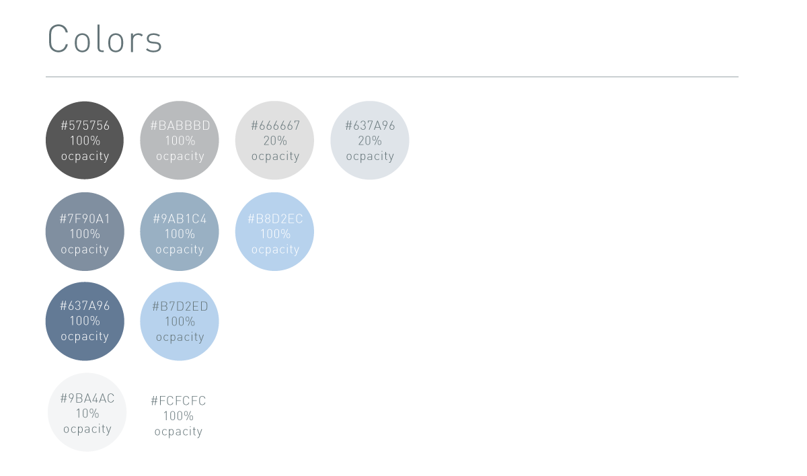

Maximizer CRM
When it comes to redesigning anything, the trickiest part comes down to the fact that people don’t like changes. One of the key important factor in reworking and developing a new interface is deciding what to keep and what to take away of change. As humans are creatures of habits and recognition, it’s important that the we as designers don’t over simplify the layout.
First of all, we want to keep the general shading of the color similar to the previous one which was blue. Changing the colors and look can cause satisfaction among existing users as they already associated themselves with that specific color to that particular brand. Hence we just took the current color, and decrease the exposure with shades of grey in order to be more pleasing to the eyes. Also, the buttons itself as well as most clickable options on the interface faces from it’s shading color to a white background signifying that the particular button is active.

Secondly, for the past few years, design aesthetics has been leaning towards flat and simplistic form of logos which in the case of the Maximizer CRM, we wanted to simplify the images for the action buttons located on the left side menu as well as emphasize on other interactive buttons on the interface such as the export buttons. The straightforward logo helps user identify the particular button and get the job done.
In order to keep a consistent tone for the user’s experience, we also need to simplify the two operation screens as well. Instead of having more tabs, we want to reduce the cluttered by creating a singular line that runs from end to end of the display screen with a rectangular indicator that will highlight on which tab is currently in use.
One of the issue that has been brought to my attention was that majority of the tabs are closable which can be helpful for users to minimize the cluttered display. Taking inspirations from a lot of other web applications and even tablet interfaces, the options of closing tabs and menu options should have an indicator. Once clicked upon, there are options to either add or delete the current tab. Another option to close the current tab would also appear under each selected tab.
By allowing the users the ability to control how many tabs they want open as well as easy access to certain tabs through a click of a button would give them a smooth transition from jumping from screen to screen and tabs to tabs. However, this still doesn’t solve one of the biggest issues that the current interface is facing which is the lack of spaces and access to particular files. In order to allow the user a better flow and experience, it’s important to have multiple views of the interface.